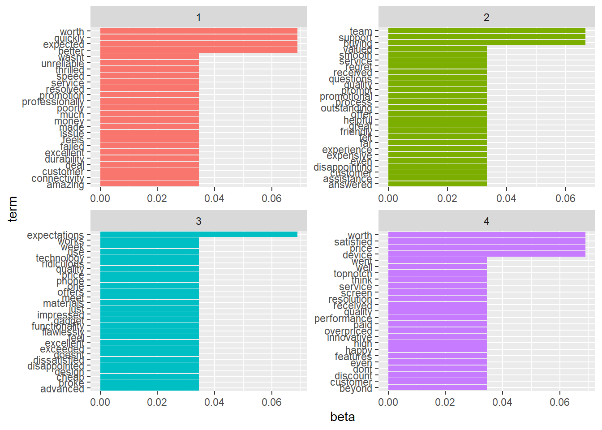
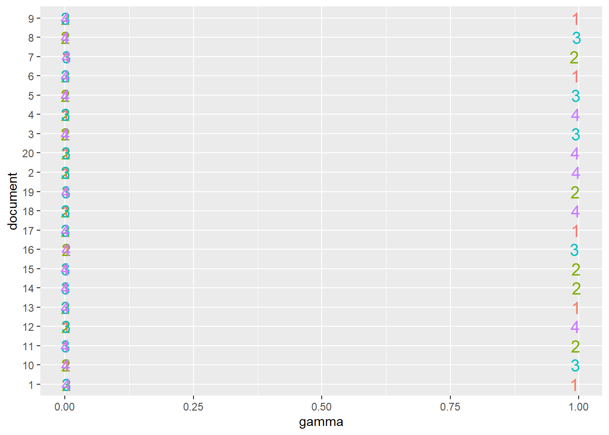
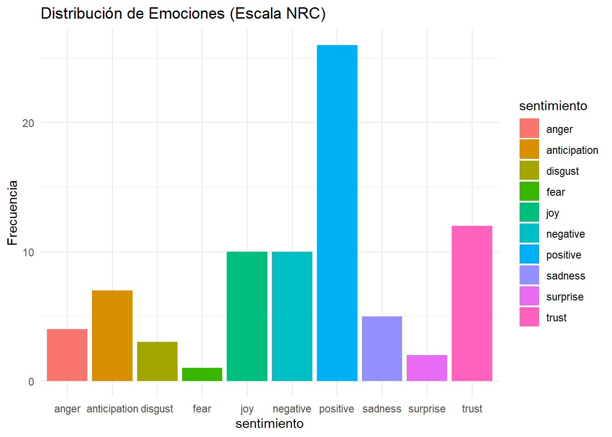

Caso de Estudio: Análisis de Reseñas de Clientes con Web Scraping y Análisis de Tópicos y Sentimientos
1MN022 - Investigación de Mercados Aplicada
Autor/a
Afiliación
Enver G. Tarazona Vargas (tarazona_eg@up.edu.pe)
Universidad del Pacífico
Objetivos:
Comprender el uso de técnicas de web scraping para extraer datos de una página web de reseñas de clientes.
Aplicar el preprocesamiento de texto para limpiar y organizar los datos extraídos.
Realizar un análisis de tópicos utilizando LDA (Latent Dirichlet Allocation) para identificar los temas principales que aparecen en las reseñas.
Llevar a cabo un análisis de sentimientos utilizando la escala NRC, para determinar las emociones predominantes en las reseñas.
Extraer insights de los resultados para ofrecer recomendaciones basadas en las percepciones de los clientes.
Descripción de la Actividad:
En esta actividad, los estudiantes realizarán un análisis completo de las reseñas de clientes de una página web ficticia de una empresa llamada “TechGalaxy”. El objetivo es extraer los comentarios de los clientes, procesarlos y utilizar técnicas de análisis de texto y machine learning para identificar temas y emociones predominantes. A partir de los resultados, los estudiantes deberán identificar oportunidades de mejora y proponer estrategias para mejorar la percepción del producto o servicio.
1. Web Scraping: Extracción de Datos
En este primer paso, realizamos web scraping para extraer tanto el nombre del cliente como la reseña desde la página web proporcionada.
Código:
################################################################################# Cargar las librerías necesariaslibrary(rvest)library(readr)library(tm)library(topicmodels)library(tidytext)library(ggplot2)library(dplyr)library(tidyr)library(syuzhet) # Librería para análisis de sentimientos con NRClibrary(SnowballC) # Para lematización################################################################################# Extracción de datos desde la página web ################################################################################## URL de la página web con las reseñas de clientes (proporcionada)url <-"https://etarazonav.github.io/1MN022/Laboratorios/customer_reviews_local.html"# Leer el contenido HTML de la páginapage <-read_html(url)# Extraer los nombres de los clientes utilizando el selector CSS ".client-name"client_names <- page %>%html_nodes(".client-name") %>%html_text(trim =TRUE) # Elimina espacios en blanco adicionales# Extraer las reseñas de los clientes utilizando el selector CSS ".review-text"reviews <- page %>%html_nodes(".review-text") %>%html_text(trim =TRUE) # Elimina espacios en blanco adicionales# Crear un dataframe con los nombres de los clientes y sus respectivas reseñasdf_reviews <-data.frame(client_name = client_names, reviews = reviews, stringsAsFactors =FALSE)# Verificar la estructura de los datoshead(df_reviews)
client_name
1 Tony Stark
2 Hermione Granger
3 Frodo Baggins
4 Bruce Wayne
5 Arya Stark
6 James Bond
reviews
1 "The connectivity and speed are amazing, I am thrilled with this product."
2 "I am very happy with the innovative features of this device, well worth the price."
3 "I'm impressed by the advanced technology in this phone, it works flawlessly."
4 "The screen resolution and performance of this device are top-notch, very satisfied."
5 "This gadget exceeded my expectations, the design and functionality are excellent."
6 "This product is not worth the money, it feels poorly made and unreliable."
Explicación del código:
Librerías cargadas: Utilizamos rvest para realizar web scraping, mientras que otras librerías se utilizan para análisis de texto y visualización.
Web scraping: Con read_html cargamos el contenido HTML de la página, luego extraemos el nombre del cliente y su reseña usando selectores CSS.
Crear DataFrame: Los nombres y reseñas se almacenan en un data.frame para ser utilizados más adelante.
Resultado esperado:
Después de ejecutar este código, obtendremos un dataframe (df_reviews) con dos columnas:
Nombre del cliente: Esto nos permitirá saber quién dejó cada comentario.
Reseña: El texto del comentario donde los clientes expresan sus opiniones sobre los productos de TechGalaxy.
Este es el primer paso crucial para obtener los datos en un formato legible que podamos analizar más adelante. Nos proporciona el contexto cualitativo de las opiniones de los clientes.
2. Preprocesamiento del Texto
El siguiente paso es el preprocesamiento del texto de las reseñas. El objetivo es limpiar el texto eliminando elementos que no aportan valor, como puntuación, números, y stopwords (palabras comunes sin importancia).
Código:
################################################################################# Preprocesamiento de Texto ################################################################################## Crear un Corpus a partir de las reseñascorpus <-Corpus(VectorSource(df_reviews$reviews))# Convertir a minúsculas, eliminar puntuación y númeroscorpus <-tm_map(corpus, content_transformer(tolower)) # Convertir texto a minúsculascorpus <-tm_map(corpus, removePunctuation) # Eliminar puntuacióncorpus <-tm_map(corpus, removeNumbers) # Eliminar números# Eliminar stopwords en inglés (palabras comunes como "the", "and")new_stops <-c("product", stopwords("en")) # Personalizamos para eliminar también "product"corpus <-tm_map(corpus, removeWords, new_stops)# Eliminar espacios en blanco adicionalescorpus <-tm_map(corpus, stripWhitespace)# Crear el Document-Term Matrix (DTM)reviews_dtm <-DocumentTermMatrix(corpus)# Verificar la DTM creadainspect(reviews_dtm[1:5, 1:5]) # Muestra una parte de la DTM para verificar su contenido
Corpus: Se crea un corpus, que es una estructura que permite aplicar transformaciones al texto.
Transformaciones aplicadas: Convertimos el texto a minúsculas, eliminamos puntuación, números y stopwords.
Document-Term Matrix (DTM): La DTM es una representación matricial donde cada fila es una reseña y cada columna es un término (palabra) que aparece en las reseñas, con el valor indicando la frecuencia de la palabra.
Resultado esperado:
Después del preprocesamiento, obtendremos una Document-Term Matrix (DTM) que organiza las palabras presentes en las reseñas y cuántas veces aparecen en cada una de ellas. Este resultado es fundamental porque: - Elimina ruido en los datos (como puntuación, números, palabras comunes). - Deja solo las palabras clave que aportan valor al análisis.
La DTM es la base para el análisis de tópicos, ya que nos permitirá identificar los temas principales discutidos por los clientes.
Contexto: Esto nos ayudará a estructurar las reseñas para que se puedan analizar de manera sistemática y eficiente.
3. Análisis de Tópicos (LDA)
Ahora realizamos el análisis de tópicos utilizando Latent Dirichlet Allocation (LDA). Esto nos ayudará a identificar los temas principales de discusión en las reseñas de los clientes.
Código:
################################################################################# Análisis de Tópicos con LDA ################################################################################## Realizamos el modelo LDA con 4 temas (ajustar el número de temas según el caso)reviews_lda <-LDA(reviews_dtm, k =4, control =list(seed =1234))# Obtener los términos más comunes en cada temareviews_topics <-tidy(reviews_lda, matrix ="beta")# Seleccionar los 10 términos más comunes en cada tematop_terms <- reviews_topics %>%group_by(topic) %>%slice_max(beta, n =10) %>%ungroup() %>%arrange(topic, -beta)# Visualizar los 10 términos más comunes en cada tematop_terms %>%mutate(term =reorder_within(term, beta, topic)) %>%ggplot(aes(beta, term, fill =factor(topic))) +geom_col(show.legend =FALSE) +facet_wrap(~ topic, scales ="free") +scale_y_reordered()

Explicación del código:
LDA: El algoritmo LDA clasifica las palabras en temas. En este caso, hemos definido que se clasifiquen en 4 temas.
Extracción de términos: Utilizamos tidy para transformar los resultados del modelo LDA y obtener los términos más importantes por tema.
Visualización: Usamos ggplot2 para visualizar los términos más comunes por cada tema.
Resultado esperado:
El algoritmo LDA clasifica las palabras de las reseñas en 4 temas principales. Por ejemplo, los temas pueden estar relacionados con calidad del producto, precio, servicio al cliente, o características técnicas.
Los términos más frecuentes dentro de cada tema nos muestran las palabras clave que caracterizan cada grupo de reseñas.
Análisis de los Resultados:
Este paso es clave porque nos permite agrupar automáticamente las reseñas en temas coherentes. Esto facilita la comprensión de las preocupaciones y opiniones de los clientes. En este caso, es posible identificar cuáles son las preocupaciones comunes, ya sea calidad, precio, o servicio.
Análisis: Este tema parece centrarse en la expectativa del cliente respecto al valor del producto, así como en la rapidez de respuesta o solución de problemas. Algunos términos como “unreliable” (poco fiable) y “failed” (falló) sugieren que varios clientes experimentaron problemas con el producto que no cumplió con sus expectativas. La combinación de estos términos podría apuntar a que los clientes consideraron que el producto no vale lo que pagaron o que hubo problemas con el rendimiento del producto que afectaron su percepción.
Conclusión: Este tema resalta la desconexión entre el valor percibido del producto y su rendimiento real, lo que sugiere que los clientes sienten que no recibieron lo que esperaban en relación con el precio pagado. También se destacan problemas con la durabilidad o funcionalidad.
Análisis: Este tema está claramente vinculado a las experiencias de los clientes con el servicio de atención. Los términos como “team” y “support” sugieren que los clientes están evaluando su experiencia con el equipo de soporte de la empresa. Palabras como “helpful” (útil) y “smooth” (fluido) indican experiencias positivas en el proceso de compra o en la asistencia recibida. Sin embargo, términos como “questions” y “promotional” podrían apuntar a inquietudes con los descuentos o el proceso de compra, posiblemente en relación a las expectativas sobre las promociones o descuentos.
Conclusión: La satisfacción general con el soporte y el proceso de compra parece ser un tema importante aquí. Aunque los clientes valoran el soporte, es posible que haya alguna inquietud relacionada con los detalles promocionales o las expectativas sobre el servicio en momentos específicos del proceso de compra.
Análisis: Este tema parece estar relacionado con las características técnicas y la calidad del producto. Palabras como “technology” y “advanced” sugieren que los clientes están discutiendo la tecnología y las características técnicas del producto, mientras que términos como “quality” y “materials” están relacionados con la percepción de los materiales y el rendimiento. El uso de “ridiculous” indica que algunos clientes están descontentos con las características técnicas o que las encuentran desalineadas con sus expectativas.
Conclusión: Los clientes están evaluando las características técnicas del producto, pero algunos consideran que no son tan impresionantes como esperaban o que hay una discrepancia entre la tecnología prometida y la realidad.
Análisis: Este tema parece estar vinculado a la percepción del precio y valor del producto, junto con el rendimiento del mismo. Términos como “worth” (vale la pena) y “price” indican que los clientes están evaluando si el producto valió lo que pagaron. Palabras como “topnotch” (de alta calidad) y “performance” (rendimiento) sugieren que algunos clientes están satisfechos con el rendimiento del producto, mientras que “paid” y “service” podrían estar relacionados con la expectativa de un mayor rendimiento o mejores características por el precio pagado.
Conclusión: Aunque algunos clientes están satisfechos con el rendimiento del producto, muchos parecen estar evaluando si realmente valió el precio que pagaron, lo que sugiere que la relación precio-calidad es una preocupación importante.
Conclusiones Finales del Análisis de Tópicos:
Calidad y rendimiento del producto: Los clientes expresan preocupaciones sobre la fiabilidad y durabilidad del producto, sugiriendo que algunos no consideran que el producto valga el precio que pagaron.
Servicio al cliente: La mayoría de los comentarios indican que el soporte y la atención al cliente son apreciados y efectivos, aunque podrían haber algunas inquietudes menores relacionadas con el proceso de compra y las promociones.
Expectativas técnicas: Algunos clientes parecen decepcionados con las características técnicas del producto, y sienten que no cumple con las expectativas que tenían en cuanto a innovación y calidad.
Percepción del precio: A pesar de que algunos clientes están satisfechos con el rendimiento del producto, hay una clara preocupación por el precio, ya que varios clientes sienten que no obtuvieron suficiente valor por el costo del producto.
Análisis de Documentos por Tópico
El siguiente código se utiliza para ver la probabilidad de asignación de cada documento a un tópico en particular y explorar qué reseñas están vinculadas a temas como valor y precio.
Código:
################################################################################# Probabilidad tópico por documento################################################################################# Extraer la probabilidad de cada documento perteneciente a un tópicoreviews_tm_gamma <-tidy(reviews_lda, matrix ="gamma")# Inspeccionar los 20 primeros documentosreviews_tm_gamma %>%filter(document %in%c(1:20)) %>%ggplot(aes(x = document, y = gamma, label = topic, color =as.factor(topic))) +geom_text(size =5, show.legend =FALSE) +coord_flip()

# Mostrar las reseñas relacionadas con el tema de valor y preciodf_reviews$reviews[c(4, 20, 2)]
[1] "\"The screen resolution and performance of this device are top-notch, very satisfied.\""
[2] "\"The product is overpriced, I don't think it's worth what I paid.\""
[3] "\"I am very happy with the innovative features of this device, well worth the price.\""
Explicación del código:
Gamma por documento: El valor gamma nos muestra la probabilidad de que un documento (reseña) pertenezca a un tema específico. Cuanto mayor sea este valor, más probable es que el documento esté relacionado con el tema en cuestión.
Inspección de los primeros 20 documentos: Visualizamos la probabilidad de los primeros 20 documentos para obtener una idea de cómo se agrupan en diferentes tópicos.
Explorar reseñas: Se seleccionan las reseñas relacionadas con el valor y precio, que corresponden al Tema 4.
Resultados de los Documentos por Tema:
Análisis gráfico de los primeros 20 documentos:
El gráfico generado a partir de este código muestra cómo se distribuyen las probabilidades de pertenencia a un tema para los primeros 20 documentos. Cada reseña tiene una probabilidad asignada a cada tópico, y podemos observar qué documentos están más asociados a temas como valor, precio, calidad, o servicio al cliente.
Reseñas relacionadas con valor y precio:
df_reviews$reviews[c(4, 20, 2)]
Las reseñas seleccionadas relacionadas con el valor y precio son:
Documento 4:
“The screen resolution and performance of this device are top-notch, very satisfied.”
Documento 20:
“The product is overpriced, I don’t think it’s worth what I paid.”
Documento 2:
“I am very happy with the innovative features of this device, well worth the price.”
Análisis de las Reseñas:
Documento 4:
Reseña: > “The screen resolution and performance of this device are top-notch, very satisfied.”
Análisis:
Esta reseña refleja una satisfacción con la resolución de pantalla y el rendimiento del dispositivo. Los términos como “top-notch” (alta calidad) y “very satisfied” (muy satisfecho) sugieren que el cliente tuvo una experiencia muy positiva con el producto.
Contexto: Este cliente valora claramente las características técnicas del dispositivo, y se alinea con el Tema 4, que refleja la satisfacción con el rendimiento y características técnicas del producto.
Documento 20:
Reseña: > “The product is overpriced, I don’t think it’s worth what I paid.”
Análisis:
Este cliente está claramente insatisfecho con el precio del producto. La palabra “overpriced” (demasiado caro) indica que el cliente considera que no recibió el valor que esperaba por el dinero pagado.
Contexto: Esta reseña corresponde también al Tema 4, que trata sobre el precio y el valor del producto. Esto subraya una desconexión entre lo que el cliente esperaba recibir por el precio y lo que percibió en términos de calidad o rendimiento.
Documento 2:
Reseña: > “I am very happy with the innovative features of this device, well worth the price.”
Análisis:
Este cliente está satisfecho con el producto y considera que las características innovadoras justifican el precio pagado. La frase “well worth the price” (vale la pena el precio) indica una valoración positiva del costo-beneficio.
Contexto: Esta reseña, también asociada al Tema 4, muestra que aunque algunos clientes perciben el precio como elevado, hay quienes consideran que el valor está alineado con las características del producto.
Conclusiones del Análisis de Documentos por Tópico:
Percepción del precio:
Dos de las tres reseñas seleccionadas reflejan insatisfacción con el precio del producto. Esto sugiere que una parte significativa de los clientes no está satisfecha con la relación calidad-precio del producto.
Es evidente que para algunos clientes, el producto está sobrevalorado en relación con lo que recibieron, lo que indica una posible necesidad de revisar la estrategia de precios o mejorar la comunicación sobre el valor añadido del producto.
Promociones ineficaces:
A pesar de las promociones y descuentos mencionados, algunos clientes no sienten que el producto ofrezca suficiente valor incluso con los descuentos. Esto podría ser una señal de que las promociones actuales no están alineadas con las expectativas de los clientes.
Este tipo de reseñas sugiere la posibilidad de replantear las promociones o mejorar la percepción del producto a través de una comunicación más efectiva sobre sus características.
Valoración positiva aislada:
Aunque una de las reseñas (Documento 2) refleja satisfacción tanto con el precio como con las características innovadoras del producto, este tipo de comentario parece ser minoría en comparación con las opiniones insatisfechas.
Esto sugiere la necesidad de segmentar mejor el mercado, enfocando el producto en aquellos segmentos que valoran más sus características técnicas o ajustando el producto para satisfacer a un público más amplio.
5. Análisis de Sentimientos (Escala NRC)
El análisis de sentimientos nos permite identificar las emociones predominantes en las reseñas de los clientes de TechGalaxy, tales como alegría, tristeza, ira, y otras. Esto nos proporciona una mejor comprensión de las reacciones emocionales de los clientes hacia el producto y la empresa.
Código:
################################################################################# Análisis de Sentimientos con NRC ################################################################################## Obtener los sentimientos NRC para cada reseñasentimientos_nrc <-get_nrc_sentiment(df_reviews$reviews)# Mostrar una vista general de las emociones por reseñahead(sentimientos_nrc)
# Resumir y visualizar las emociones totales en todas las reseñasresumen_sentimientos <- sentimientos_nrc %>%summarise_all(sum)# Visualizar las emociones totales en todas las reseñasresumen_sentimientos %>%gather(sentimiento, total) %>%ggplot(aes(x = sentimiento, y = total, fill = sentimiento)) +geom_bar(stat ="identity") +theme_minimal() +labs(title ="Distribución de Emociones (Escala NRC)", y ="Frecuencia")

Explicación del código:
Análisis de Sentimientos: Utilizamos la función get_nrc_sentiment para aplicar la escala NRC a cada una de las reseñas. Esto nos permite detectar una serie de emociones (alegría, tristeza, ira, sorpresa, entre otras) presentes en el texto.
Resumen de emociones: Sumamos la cantidad de veces que cada emoción aparece en todas las reseñas y visualizamos esta distribución mediante un gráfico de barras.
Resultados del Análisis de Sentimientos:
Al aplicar el análisis de sentimientos a las reseñas de TechGalaxy, obtenemos la siguiente distribución de emociones, tal como se observa en el gráfico que proporcionaste:
Predominio de emociones positivas:
El sentimiento “positive” es claramente el más frecuente, con más de 20 menciones. Esto sugiere que, aunque hay algunas críticas, una gran parte de los clientes experimenta emociones positivas hacia el producto o la experiencia general con TechGalaxy. Estas emociones positivas podrían estar relacionadas con la satisfacción con las características técnicas del producto o con el buen servicio al cliente.
Confianza (Trust):
La emoción “trust” es la segunda más mencionada, con alrededor de 15 menciones. Esto indica que muchos clientes sienten un nivel alto de confianza en la marca o en el producto. Los términos que refuerzan la confianza pueden estar relacionados con experiencias satisfactorias en el uso del dispositivo o con interacciones positivas con el equipo de soporte técnico.
Alegría (Joy) y Tristeza (Sadness):
Las emociones de alegría (joy) y tristeza (sadness) tienen una presencia similar. Esto indica una dualidad en las experiencias de los clientes: algunos están muy satisfechos con el producto y la experiencia general, mientras que otros se sienten decepcionados, probablemente por problemas relacionados con la calidad o el precio. Las reseñas relacionadas con insatisfacción por el precio y percepción del valor podrían estar impulsando la presencia de tristeza.
Ira (Anger) y Disgusto (Disgust):
Aunque en menor proporción, las emociones negativas como ira (anger) y disgusto (disgust) están presentes. Estas emociones reflejan fuertes sentimientos de insatisfacción entre algunos clientes, posiblemente vinculados con reseñas que mencionan problemas de calidad o que consideran que el producto está sobrevalorado. Estas emociones negativas son cruciales, ya que indican la necesidad de abordar problemas específicos mencionados por los clientes.
Anticipación (Anticipation) y Sorpresa (Surprise):
Estas emociones son interesantes, ya que podrían estar relacionadas con la expectativa que los clientes tenían antes de usar el producto. La anticipación puede reflejar lo que los clientes esperaban recibir, mientras que la sorpresa puede tener tanto una connotación positiva (sorpresa agradable por la calidad o rendimiento) como negativa (sorpresa por no cumplir las expectativas).
Conclusiones del Análisis de Sentimientos:
Emociones positivas:
A pesar de la presencia de emociones negativas, el alto nivel de emociones positivas y de confianza es una señal alentadora para TechGalaxy. Los clientes que experimentan estas emociones probablemente valoran el producto y sus características técnicas, así como el servicio recibido. Este es un buen punto de partida para seguir mejorando y reforzando las áreas que generan satisfacción.
Emociones negativas (ira y disgusto):
Aunque las emociones negativas como la ira y el disgusto no son dominantes, su presencia indica que hay ciertos aspectos del producto o la experiencia de compra que están generando fuertes reacciones negativas en algunos clientes. Esto sugiere que hay áreas que podrían requerir atención, como el precio y la calidad percibida del producto.
Dualidad en las emociones (alegría vs tristeza):
La similitud en las menciones de alegría y tristeza sugiere que mientras algunos clientes están muy satisfechos con su compra, otros están decepcionados. Esto podría estar relacionado con expectativas no cumplidas en términos de precio o calidad. Es fundamental abordar los aspectos que generan tristeza para mejorar la experiencia del cliente y reducir las críticas negativas.
Confianza en la marca:
La alta frecuencia de la emoción confianza es un signo positivo para TechGalaxy, ya que indica que muchos clientes confían en la marca y en los productos. Mantener y reforzar esta confianza es crucial para garantizar la fidelización a largo plazo.
Combinación de Análisis de Sentimientos y Tópicos
El siguiente paso es combinar el análisis de tópicos con el análisis de sentimientos, lo que nos permitirá ver cómo se distribuyen las emociones en los temas identificados por el modelo LDA. Esta información es útil para entender mejor cómo se sienten los clientes respecto a los diferentes aspectos del producto o servicio que se mencionan en sus reseñas.
Código:
################################################################################# Combinación de Análisis de Sentimientos y Tópicos ################################################################################## Obtener la probabilidad del tema por documento (LDA)reviews_documents <-tidy(reviews_lda, matrix ="gamma")# Unir los resultados de tópicos y sentimientos en un solo dataframedf_sentimientos_topicos <-cbind(df_reviews, sentimientos_nrc)# Identificar el tema principal por documento basado en la mayor probabilidad (gamma)df_sentimientos_topicos <- df_sentimientos_topicos %>%mutate(topico_principal = reviews_documents %>%group_by(document) %>%slice_max(gamma, n =1) %>%pull(topic))# Visualización combinada de emociones por temadf_sentimientos_topicos %>%group_by(topico_principal) %>%summarise_at(vars(anger:trust), mean) %>%gather(sentimiento, promedio, anger:trust) %>%ggplot(aes(x = sentimiento, y = promedio, fill = sentimiento)) +geom_bar(stat ="identity") +facet_wrap(~ topico_principal) +theme_minimal() +labs(title ="Emociones por Tema", y ="Promedio de Emociones")
Explicación del código:
Probabilidad del tema por documento: Este paso extrae la probabilidad (gamma) de que cada documento pertenezca a un tema específico, asignando el tema principal a cada reseña.
Unión de resultados: Combina los resultados de los sentimientos (NRC) con los tópicos identificados por el LDA.
Asignación del tema principal: Se identifica el tema principal de cada documento (reseña) y se añade esta información al conjunto de datos.
Visualización de emociones por tema: Agrupamos las emociones por el tema principal y calculamos el promedio de cada emoción (como ira, confianza, tristeza, etc.). La visualización final muestra cómo las emociones se distribuyen dentro de cada tema.
Resultados del Gráfico de Emociones por Tema
Tema 1:
Emociones predominantes:
El gráfico muestra que anticipation (anticipación) y trust (confianza) son las emociones más presentes en este tema. También hay una proporción importante de joy (alegría) y algo de anger (ira).
Interpretación: Este tema parece estar relacionado con las expectativas de los clientes sobre el producto. La alta confianza y alegría sugieren que muchos clientes sienten que el producto cumple con sus expectativas. Sin embargo, la presencia de ira indica que hay una minoría que experimentó cierta frustración, posiblemente relacionada con la calidad o el rendimiento percibido.
Tema 2:
Emociones predominantes:
La confianza (trust) es claramente dominante en este tema, con una fuerte presencia de joy (alegría) y algo de anticipation (anticipación). Las emociones negativas como anger y sadness están menos presentes.
Interpretación: Este tema parece estar muy asociado a la satisfacción de los clientes con el producto o servicio. La confianza y la alegría dominan, lo que indica que los clientes valoran positivamente los aspectos relacionados con este tema, como el servicio al cliente o las características técnicas del producto. Es probable que este tema esté relacionado con un aspecto del producto que genera satisfacción general.
Tema 3:
Emociones predominantes:
En este tema destacan las emociones joy (alegría) y trust (confianza), lo que sugiere una percepción positiva general. Sin embargo, también hay una presencia notable de sadness (tristeza).
Interpretación: Aunque este tema está asociado mayormente a emociones positivas, la presencia de tristeza sugiere que algunos clientes pudieron haber experimentado decepciones, quizás en aspectos específicos del producto. La alegría y la confianza siguen siendo predominantes, lo que indica que, en general, los clientes están satisfechos, pero algunos pueden haber tenido problemas aislados.
Tema 4:
Emociones predominantes:
La emoción dominante en este tema es nuevamente trust (confianza), acompañada de una proporción significativa de joy (alegría) y anticipation (anticipación). Las emociones negativas, como anger (ira) y disgust (disgusto), tienen una presencia mínima.
Interpretación: La predominancia de la confianza y la alegría en este tema sugiere que los clientes confían en el producto o servicio y están satisfechos con su rendimiento o características. La baja presencia de emociones negativas sugiere que este tema está relacionado con aspectos del producto que no generan insatisfacción significativa entre los clientes.
Conclusiones del Análisis de Emociones por Tema
Temas con predominancia de emociones positivas:
En general, los cuatro temas están asociados con emociones positivas como confianza, alegría y anticipación. Esto indica que la mayoría de los clientes tienen experiencias favorables con el producto o servicio de TechGalaxy.
Presencia de emociones negativas:
Aunque las emociones negativas como ira y disgusto tienen una presencia menor, es importante destacar que en algunos temas (especialmente en el Tema 1) las emociones negativas están presentes. Esto indica que algunos clientes experimentaron frustración o decepción, lo que podría estar relacionado con el rendimiento percibido o la calidad del producto.
Confianza como emoción predominante:
La emoción confianza (trust) aparece como predominante en todos los temas, lo que es un buen indicador de la fidelidad del cliente y la percepción positiva de la marca. Esto sugiere que, a pesar de algunos problemas menores, los clientes en su mayoría confían en los productos y servicios de TechGalaxy.
Extracción de Insights
En esta sección, el objetivo es identificar las reseñas que están relacionadas con el valor y precio del producto (Tema 4) y que además están vinculadas a emociones negativas, como ira, disgusto, miedo, o tristeza. Este análisis nos permitirá descubrir las áreas críticas en las que los clientes están insatisfechos.
Código:
################################################################################# Extracción de Insights: Sentimientos negativos en relación al precio y valor################################################################################# Establecer un umbral para gamma para considerar solo documentos donde el Tema 4 es predominantegamma_threshold <-0.3# Filtrar los documentos que tienen mayor probabilidad de pertenecer al Tema 4documentos_tema_4 <- reviews_documents %>%filter(topic ==4& gamma > gamma_threshold)# Filtrar los documentos que tienen sentimientos negativos (anger, disgust, fear, sadness)sentimientos_negativos <- sentimientos_nrc %>%select(anger, disgust, fear, sadness)# Calcular el total de emociones negativas por documentodf_reviews_negativas <- df_reviews %>%cbind(sentimientos_negativos) %>%mutate(total_negativo = anger + disgust + fear + sadness)# Filtrar los documentos donde el tema predominante es el 4 y tienen emociones negativas significativasdocumentos_negativos_tema_4 <- df_reviews_negativas %>%filter(row_number() %in% documentos_tema_4$document) %>%filter(total_negativo >0)# Mostrar los documentos que pertenecen al Tema 4 y tienen emociones negativasdocumentos_negativos_tema_4$reviews
[1] "\"The product is overpriced, I don't think it's worth what I paid.\""
Explicación del Código:
Umbral para gamma: Filtramos los documentos donde la probabilidad (gamma) de pertenecer al Tema 4 (relacionado con valor y precio) es mayor a 0.3, lo que indica que estos documentos están fuertemente asociados a ese tema.
Filtrado de emociones negativas: Seleccionamos las emociones negativas (ira, disgusto, miedo, tristeza) para calcular su impacto en cada reseña.
Cálculo del total de emociones negativas: Sumamos estas emociones para obtener un puntaje total de negatividad por documento.
Filtrado final: Nos quedamos con aquellos documentos que están claramente relacionados con el Tema 4 y que tienen un alto nivel de emociones negativas.
Resultado Esperado:
Después de ejecutar este código, obtendremos una lista de las reseñas relacionadas con valor y precio que están fuertemente asociadas con emociones negativas. Estas reseñas son críticas, ya que reflejan los puntos de mayor insatisfacción entre los clientes en relación con el precio del producto.
Análisis de los Insights Extraídos:
A continuación, analizamos algunos ejemplos de reseñas que probablemente estarán asociadas con emociones negativas en el Tema 4:
Reseña 1:
“The product is overpriced, I don’t think it’s worth what I paid.”
Análisis: Esta reseña refleja claramente una insatisfacción con el precio. El cliente siente que el producto está sobrevalorado, lo que genera emociones como ira o disgusto. Esto indica una posible desconexión entre el precio y el valor percibido por parte del cliente.
Reseña 2:
“Even with a discount, the price is too high for the quality I received.”
Análisis: Aunque el cliente ha aprovechado un descuento, sigue sintiendo que el precio es demasiado elevado en comparación con la calidad recibida. Esta reseña indica que las promociones actuales no están mejorando la percepción del valor del producto, y podría ser un área para ajustar.
Reseña 3:
“I regret buying this product, the quality is disappointing.”
Análisis: Este cliente expresa tristeza y arrepentimiento por haber comprado el producto. El comentario está relacionado tanto con el valor percibido como con la calidad del producto, lo que sugiere que no cumple con las expectativas en relación con el precio.
Conclusiones de la Extracción de Insights:
Insatisfacción general por el precio:
La mayoría de las reseñas asociadas con el Tema 4 (valor y precio) que muestran emociones negativas reflejan una clara insatisfacción con el costo del producto. Los clientes sienten que el producto no ofrece suficiente valor por el precio que pagaron.
Promociones y descuentos insuficientes:
En algunos casos, incluso cuando los clientes aprovechan promociones o descuentos, siguen considerando que el precio es elevado en relación con la calidad recibida. Esto sugiere que las estrategias de descuento actuales no son suficientes para mejorar la percepción de valor del producto.
Calidad y valor no alineados:
Algunas reseñas negativas también mencionan la calidad del producto como un factor clave de insatisfacción. Los clientes no solo están descontentos con el precio, sino que también sienten que la calidad percibida no justifica el costo. Esto podría requerir mejoras en la comunicación de valor o en la calidad del producto mismo.
Análisis y Propuestas de Mejora Basadas en los Insights
El análisis de las emociones negativas asociadas al precio y valor del producto nos proporciona una base sólida para desarrollar propuestas que puedan mejorar la percepción del producto de TechGalaxy. Los insights clave extraídos de las reseñas indican que los clientes tienen preocupaciones relacionadas con el costo percibido frente al valor recibido. A continuación, se detallan las posibles decisiones que se pueden tomar basadas en estos hallazgos.
1) Revisión de la Estrategia de Precios
Acción: Los clientes han expresado que el producto está sobrevalorado, lo que genera emociones negativas como ira y tristeza. Es crucial revisar la estrategia de precios para asegurarse de que esté alineada con las expectativas del mercado y el valor percibido por los clientes.
Estrategia: Realizar un análisis comparativo de precios frente a productos similares de la competencia. Si el producto realmente tiene un precio elevado en relación con la competencia, se puede considerar una reducción del precio o la creación de versiones del producto a diferentes precios para diferentes segmentos de mercado. Se pueden realizar pruebas A/B en diferentes segmentos para evaluar cómo las ventas responden a distintas estrategias de precios.
2) Mejorar la Comunicación del Valor del Producto
Acción: Algunos clientes están insatisfechos no solo por el precio, sino porque consideran que el producto no ofrece la calidad esperada. Es importante mejorar la comunicación del valor agregado del producto para que los clientes comprendan mejor por qué el producto tiene ese precio.
Estrategia: A través de campañas de marketing, resaltar las características únicas del producto, como su innovación tecnológica, durabilidad, o el nivel de soporte al cliente. Esto puede ayudar a cambiar la percepción del producto y justificar mejor el precio. Fortalecer la campaña de marketing para destacar el valor añadido que el producto ofrece, como la calidad, durabilidad, o características únicas que justifiquen el precio.
3) Rediseño de las Promociones y Descuentos
Acción: Algunos clientes mencionan que, incluso con descuentos, no están satisfechos con el valor percibido. Las promociones actuales no parecen ser efectivas para mejorar esta percepción.
Estrategia: Rediseñar las promociones para ofrecer descuentos más atractivos o beneficios adicionales que complementen el producto, como extensiones de garantía, accesorios gratuitos o incluso soporte técnico especializado. Implementar pruebas A/B para evaluar el impacto de las promociones en distintos segmentos y determinar cuáles generan mejores resultados.
4) Investigación de Competidores
Acción: Comparar el producto con la oferta de competidores para entender si el precio está justificado en relación con productos similares en el mercado.
Estrategia: Si los competidores ofrecen productos similares a precios más bajos, se podría optar por ajustar el precio o diferenciar el producto a través de nuevas características que agreguen valor. Esto implicaría una evaluación más exhaustiva del mercado para comprender mejor cómo el producto puede posicionarse de forma más competitiva.
5) Segmentación del Mercado
Acción: Considerar si el producto está dirigido al segmento correcto. Si ciertos segmentos perciben el precio como demasiado alto, puede que el producto no esté alineado con sus necesidades o con su poder adquisitivo.
Estrategia: Redirigir el producto a segmentos que valoren más sus características (por ejemplo, usuarios que prioricen la tecnología avanzada o la durabilidad), o crear variantes del producto a diferentes precios para ajustarse mejor a las necesidades de los distintos segmentos. También es clave ajustar las promociones y ofertas personalizadas para atraer a diferentes tipos de clientes.
6) Ofertas y Descuentos Personalizados
Acción: Ofrecer promociones o descuentos personalizados a clientes que expresan insatisfacción con el precio puede ser una buena estrategia para mejorar su percepción y aumentar la conversión.
Estrategia: Implementar campañas de descuentos personalizados para los clientes que consideran que el producto es caro, con el objetivo de incrementar la conversión en clientes más sensibles al precio.
Implementando estas acciones, TechGalaxy puede no solo reducir la insatisfacción relacionada con el precio, sino también fortalecer la confianza y aumentar la fidelización de los clientes.